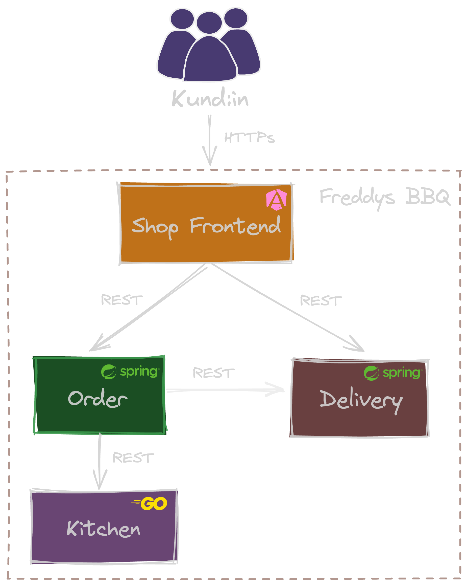
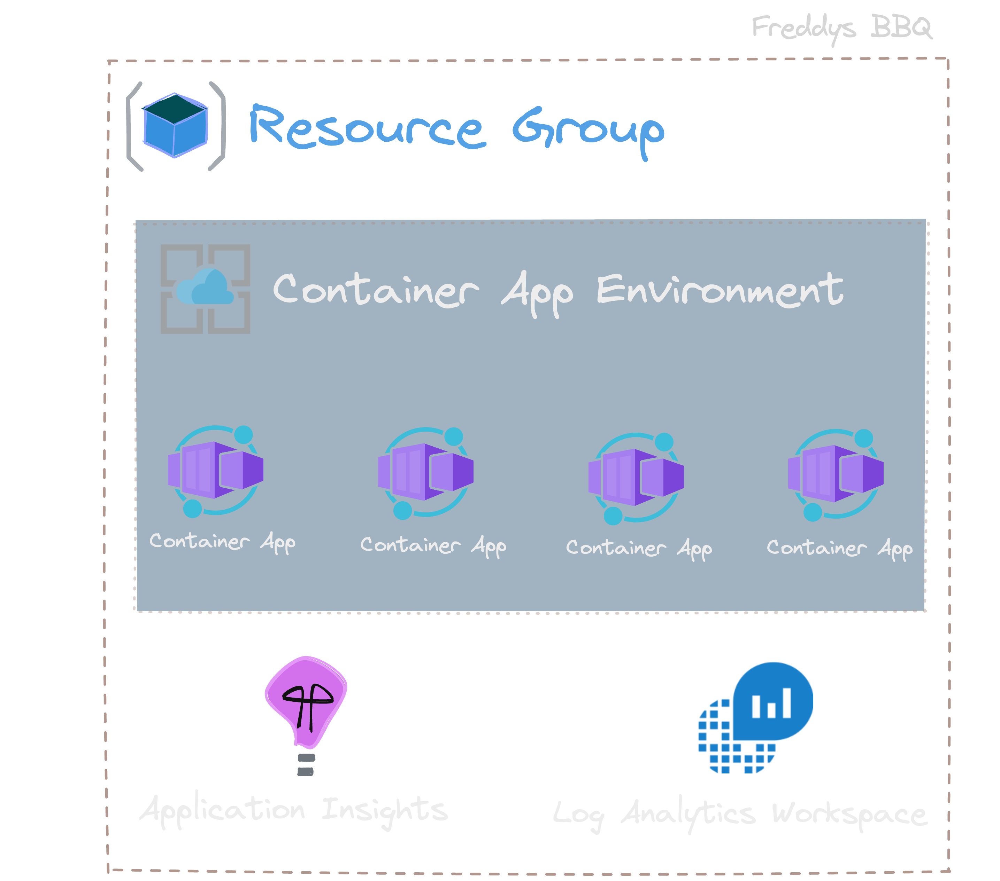
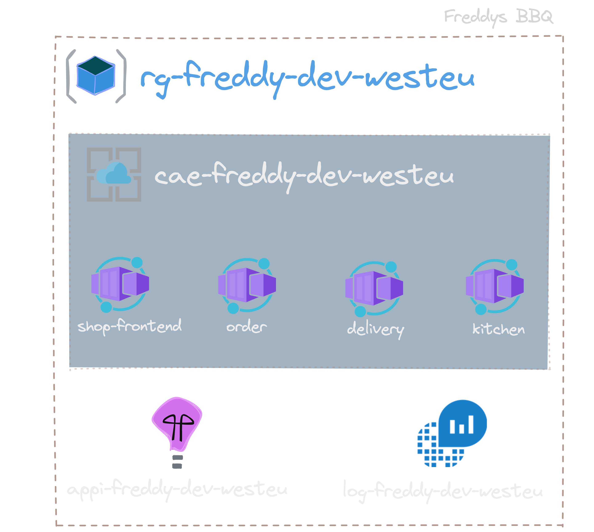
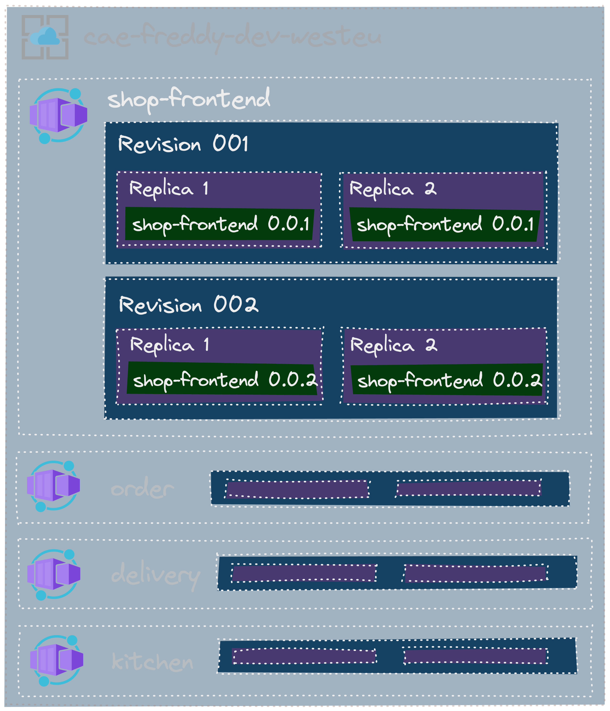
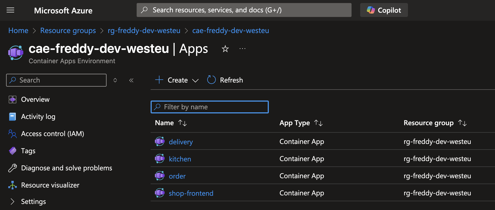
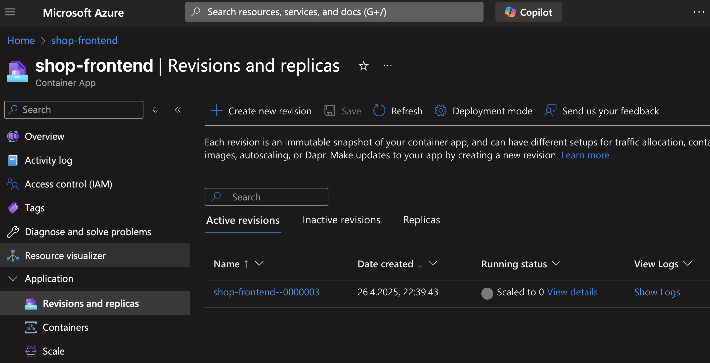

Microservices lieben Azure Container Apps
💝
Azure Container Apps
Container aber einfach
Azure Container Apps @crossnative
Ausgangssituation
- Standardisierte Software Projekte
- Fokus auf Anwendungen nicht Infrastruktur
- Launchpad Stack mit Spring, Postgres, ...
- Cloud Umgebung von Außen verfügbar
- Container basiert und k8s nah
- Pay-per-Use
Azure Container Apps ! 🚀
Azure Container Apps
safa
- vollständig verwaltete Container Plattform
- flexibel Skalierbar (Zero to Hero)
- "mini" k8s mit 1 Namespace
- basiert auf Azure Kubernetes Plattform
- Kubernetes ohne Server
- KEDA Autoscaling, Replicas und Ingress von Kubernetes
ACA @crossnative
- nutzen ACA seit 2 Jahren
- erst nur für Test und Entwicklung
- produktiver Betrieb mehrerer Anwendungen
Freddys BBQ
Basis Setup
🍖
Freddys BBQ _ Übersicht
Microservices mit Azure Container Apps
- ein gemeinsames Container App Environment
- eine Container App je Microservice
- App Insights und Log Analytics gemeinsam
Freddys BBQ _ Infrastruktur
Freddys BBQ _ Infrastruktur
Container App Environment
Freddys Container Apps
Shop Frontend Container App
Demo 🚧
Infrastruktur mit Terraform
Freddys BBQ
in Produktion
🍖
In Produktion
- Konfiguration über Umgebungsvariablen
- Passwörter aus Secrets
- Probes
- Workload Profiles
Azure Container Apps
Function-as-a-Service
-
Google Cloud Run Function
- Go Function Framework
- HTTP Handler Function
- JSON und Structs
- Fehler
- HTTP Handler Test
-
Azure Function App
- Umgebungsvariablen
- HTTP Router/Server
- Lokale Ausführung
Serverless Containers
-
Google Cloud Run
- Docker Image
- HTTP Router/Server
-
Azure Container Apps
- Health Check
3 Gründe für
Azure Container Apps
- 🏃 Schnell
- ☯️ Einfach
- 🚂 Mächtig